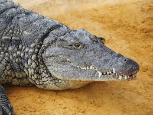

Cocodrilo del Nilo

Hábitat y estilo de vida:
El cocodrilo del Nilo (Crocodylus niloticus) es uno de los reptiles más grandes del mundo, alcanzando longitudes de hasta 6 metros y pesos de más de 900 kg. Habita en ríos, lagos y pantanos de África subsahariana y Madagascar. Son depredadores sigilosos que pasan la mayor parte del tiempo sumergidos en el agua, esperando a sus presas.
Son animales extremadamente territoriales y agresivos, capaces de cazar presas de gran tamaño, incluyendo cebras, ñus e incluso humanos. Su mandíbula es una de las más poderosas del reino animal, con una fuerza de mordida superior a la de cualquier otro depredador terrestre. Se comunican con sonidos guturales y movimientos corporales, y las hembras protegen a sus crías hasta que son lo suficientemente grandes para valerse por sí mismas.
Características
- Tamaño: Puede alcanzar hasta 6 metros de longitud y pesar más de 900 kg.
- Reproducción: Las hembras ponen hasta 60 huevos en nidos de arena y los protegen ferozmente.
- Caza: Son depredadores oportunistas, emboscando a sus presas en el agua.
- Adaptación: Pueden permanecer sumergidos hasta 30 minutos sin salir a respirar.
- Estado de conservación: Aunque no están en peligro de extinción, enfrentan amenazas por la caza y la destrucción de su hábitat.
Regresar a la página principal